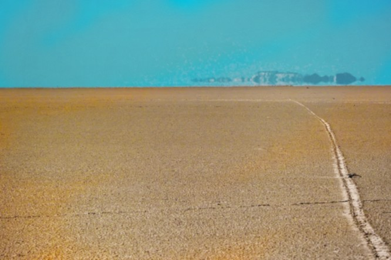
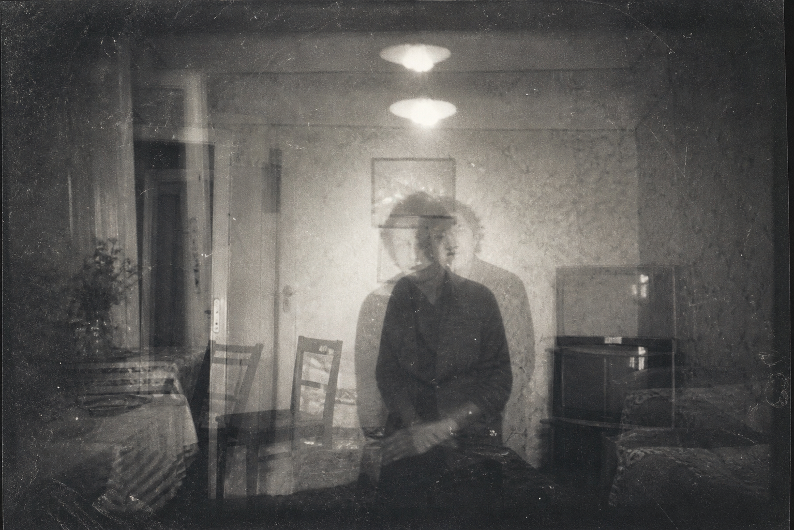
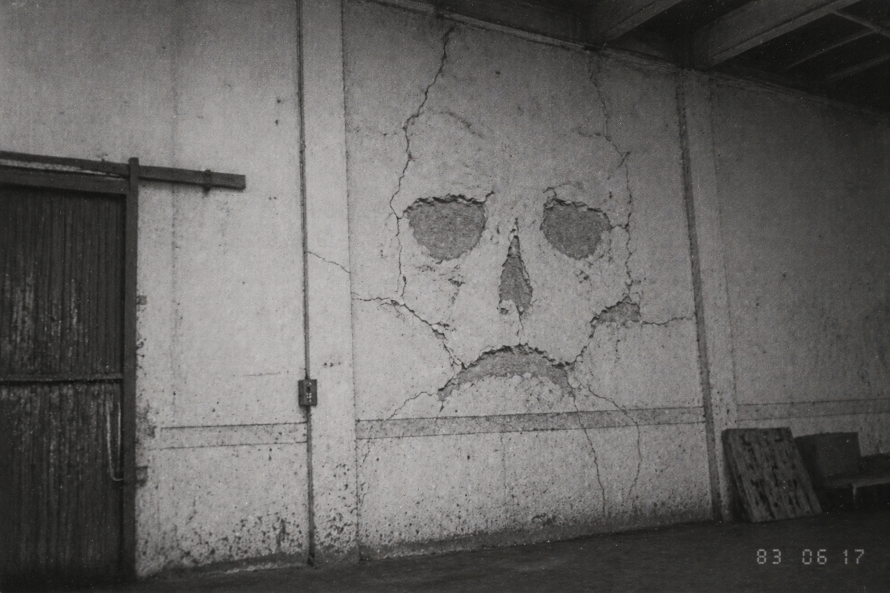
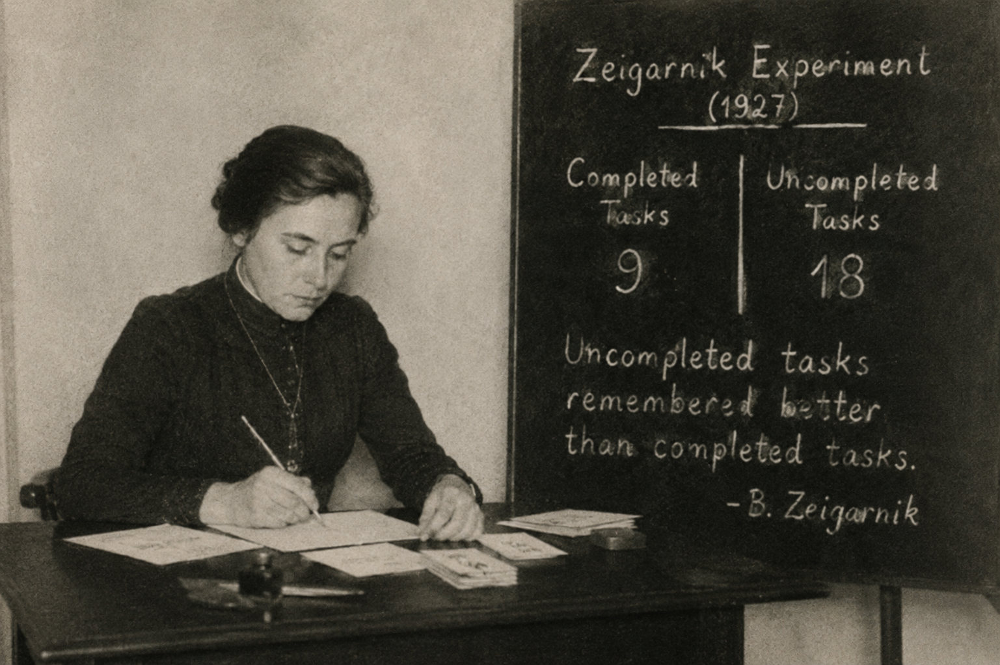
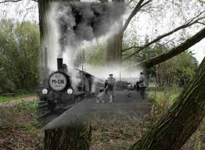

14 ноября 1981 · Вади-эль-ХадраАнри Дюбуа, гидрологЭФФЕКТ: МИРАЖ (тепловая инверсия)

Фото пустыни в тот день
«Я видел озеро с пальмами. Мы шли к нему два часа, но вода исчезла. Тепловая инверсия — слои воздуха разной плотности. Но почему мой мозг нарисовал такое реалистичное чудо? Я боюсь собственных глаз.»
12 октября 1978 · миссия Св. Терезыотец Пьер МатьёЭФФЕКТ: ДЕЖАВЮ

Фасад миссии, 1978 г.
«Всё повторялось: разговор, скрип лампы, даже запах. Я знал, что скажет помощник. Длилось пять минут. Врач сказал: сбой в височных долях. Господи, не дай мне сойти с ума.»
май 1983 · склад №7, НуариБамба Коне, сторожЭФФЕКТ: ПАРЕЙДОЛИЯ

Фото стены при дневном свете
«Третью ночь стена смотрит на меня — чёткий лик старухи. Подхожу — просто трещины. Мозг достраивает знакомые образы. Мне сказали "парейдолия", но почему я никогда раньше их не видел?»
август 1979 · канцелярияКристиан Ндойе, клеркЭФФЕКТ: ЗЕЙГАРНИК

Рабочий стол с незавершённой докладной
«Меня оторвали от докладной на полуслове. Теперь эта незаконченная фраза сверлит голову дни и ночи. Эффект Зейгарник — незавершённые дела запоминаются в два раза лучше. Я чувствую себя одержимым.»
«Луна у горизонта — размером с тарелку. В зените — монета. Замерил углы: одинаково 0,53 градуса! Мой мозг отказывается верить приборам. Органы чувств врут.»
«Я переписал старый документ слово в слово, не помня оригинала. Криптомнезия — чужая мысль кажется своей. Где граница между собой и осколками чужого прошлого?»
сентябрь 1998 · Ржевский р-нСергей М., поисковикХРОНОМИРАЖ

Место событий
«По небу шли цепи солдат в шинелях, падали, поднимались. Слышали выстрелы. Длилось 15 минут. Мы нашли останки именно там. Я не пью, я здоров.»